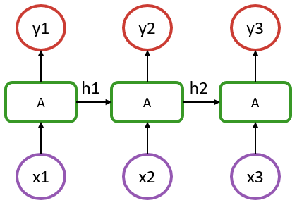

Recurrent Models
Recurrent cells
To introduce Flux's recurrence functionalities, we will consider the following vanilla recurrent neural network structure:

In the above, we have a sequence of length 3, where x1 to x3 represent the input at each step (could be a timestamp or a word in a sentence), and y1 to y3 are their respective outputs.
An aspect to recognize is that in such a model, the recurrent cells A all refer to the same structure. What distinguishes it from a simple dense layer is that the cell A is fed, in addition to an input x, with information from the previous state of the model (hidden state denoted as h1 & h2 in the diagram).
In the most basic RNN case, cell A could be defined by the following:
output_size = 5
input_size = 2
Wxh = randn(Float32, output_size, input_size)
Whh = randn(Float32, output_size, output_size)
b = randn(Float32, output_size)
function rnn_cell(h, x)
h = tanh.(Wxh * x .+ Whh * h .+ b)
return h, h
end
x = rand(Float32, input_size) # dummy input data
h = rand(Float32, output_size) # random initial hidden state
h, y = rnn_cell(h, x)Notice how the above is essentially a Dense layer that acts on two inputs, h and x.
If you run the last line a few times, you'll notice the output y changing slightly even though the input x is the same.
There are various recurrent cells available in Flux, notably RNNCell, LSTMCell and GRUCell, which are documented in the layer reference. The hand-written example above can be replaced with:
using Flux
rnn = Flux.RNNCell(2, 5)
x = rand(Float32, 2) # dummy data
h = rand(Float32, 5) # initial hidden state
h, y = rnn(h, x)Stateful Models
For the most part, we don't want to manage hidden states ourselves, but to treat our models as being stateful. Flux provides the Recur wrapper to do this.
x = rand(Float32, 2)
h = rand(Float32, 5)
m = Flux.Recur(rnn, h)
y = m(x)The Recur wrapper stores the state between runs in the m.state field.
If we use the RNN(2, 5) constructor – as opposed to RNNCell – you'll see that it's simply a wrapped cell.
julia> using Flux
julia> RNN(2, 5) # or equivalently RNN(2 => 5)
Recur(
RNNCell(2 => 5, tanh), # 45 parameters
) # Total: 4 trainable arrays, 45 parameters,
# plus 1 non-trainable, 5 parameters, summarysize 412 bytes.Equivalent to the RNN stateful constructor, LSTM and GRU are also available.
Using these tools, we can now build the model shown in the above diagram with:
julia> m = Chain(RNN(2 => 5), Dense(5 => 1))
Chain(
Recur(
RNNCell(2 => 5, tanh), # 45 parameters
),
Dense(5 => 1), # 6 parameters
) # Total: 6 trainable arrays, 51 parameters,
# plus 1 non-trainable, 5 parameters, summarysize 580 bytes. In this example, each output has only one component.
Working with sequences
Using the previously defined m recurrent model, we can now apply it to a single step from our sequence:
julia> x = rand(Float32, 2);
julia> m(x)
1-element Vector{Float32}:
0.45860028The m(x) operation would be represented by x1 -> A -> y1 in our diagram. If we perform this operation a second time, it will be equivalent to x2 -> A -> y2 since the model m has stored the state resulting from the x1 step.
Now, instead of computing a single step at a time, we can get the full y1 to y3 sequence in a single pass by iterating the model on a sequence of data.
To do so, we'll need to structure the input data as a Vector of observations at each time step. This Vector will therefore be of length = seq_length and each of its elements will represent the input features for a given step. In our example, this translates into a Vector of length 3, where each element is a Matrix of size (features, batch_size), or just a Vector of length features if dealing with a single observation.
julia> x = [rand(Float32, 2) for i = 1:3];
julia> [m(xi) for xi in x]
3-element Vector{Vector{Float32}}:
[0.36080405]
[-0.13914406]
[0.9310162]Mapping and broadcasting operations with stateful layers such are discouraged, since the julia language doesn't guarantee a specific execution order. Therefore, avoid
y = m.(x)
# or
y = map(m, x)and use explicit loops
y = [m(x) for x in x]If for some reason one wants to exclude the first step of the RNN chain for the computation of the loss, that can be handled with:
using Flux.Losses: mse
function loss(x, y)
m(x[1]) # ignores the output but updates the hidden states
sum(mse(m(xi), yi) for (xi, yi) in zip(x[2:end], y))
end
y = [rand(Float32, 1) for i=1:2]
loss(x, y)In such a model, only the last two outputs are used to compute the loss, hence the target y being of length 2. This is a strategy that can be used to easily handle a seq-to-one kind of structure, compared to the seq-to-seq assumed so far.
Alternatively, if one wants to perform some warmup of the sequence, it could be performed once, followed with a regular training where all the steps of the sequence would be considered for the gradient update:
function loss(x, y)
sum(mse(m(xi), yi) for (xi, yi) in zip(x, y))
end
seq_init = [rand(Float32, 2)]
seq_1 = [rand(Float32, 2) for i = 1:3]
seq_2 = [rand(Float32, 2) for i = 1:3]
y1 = [rand(Float32, 1) for i = 1:3]
y2 = [rand(Float32, 1) for i = 1:3]
X = [seq_1, seq_2]
Y = [y1, y2]
data = zip(X,Y)
Flux.reset!(m)
[m(x) for x in seq_init]
ps = Flux.params(m)
opt= Adam(1e-3)
Flux.train!(loss, ps, data, opt)In this previous example, model's state is first reset with Flux.reset!. Then, there's a warmup that is performed over a sequence of length 1 by feeding it with seq_init, resulting in a warmup state. The model can then be trained for 1 epoch, where 2 batches are provided (seq_1 and seq_2) and all the timesteps outputs are considered for the loss.
In this scenario, it is important to note that a single continuous sequence is considered. Since the model state is not reset between the 2 batches, the state of the model flows through the batches, which only makes sense in the context where seq_1 is the continuation of seq_init and so on.
Batch size would be 1 here as there's only a single sequence within each batch. If the model was to be trained on multiple independent sequences, then these sequences could be added to the input data as a second dimension. For example, in a language model, each batch would contain multiple independent sentences. In such scenario, if we set the batch size to 4, a single batch would be of the shape:
x = [rand(Float32, 2, 4) for i = 1:3]
y = [rand(Float32, 1, 4) for i = 1:3]That would mean that we have 4 sentences (or samples), each with 2 features (let's say a very small embedding!) and each with a length of 3 (3 words per sentence). Computing m(batch[1]), would still represent x1 -> y1 in our diagram and returns the first word output, but now for each of the 4 independent sentences (second dimension of the input matrix). We do not need to use Flux.reset!(m) here; each sentence in the batch will output in its own "column", and the outputs of the different sentences won't mix.
To illustrate, we go through an example of batching with our implementation of rnn_cell. The implementation doesn't need to change; the batching comes for "free" from the way Julia does broadcasting and the rules of matrix multiplication.
output_size = 5
input_size = 2
Wxh = randn(Float32, output_size, input_size)
Whh = randn(Float32, output_size, output_size)
b = randn(Float32, output_size)
function rnn_cell(h, x)
h = tanh.(Wxh * x .+ Whh * h .+ b)
return h, h
endHere, we use the last dimension of the input and the hidden state as the batch dimension. I.e., h[:, n] would be the hidden state of the nth sentence in the batch.
batch_size = 4
x = rand(Float32, input_size, batch_size) # dummy input data
h = rand(Float32, output_size, batch_size) # random initial hidden state
h, y = rnn_cell(h, x)julia> size(h) == size(y) == (output_size, batch_size)
trueIn many situations, such as when dealing with a language model, the sentences in each batch are independent (i.e. the last item of the first sentence of the first batch is independent from the first item of the first sentence of the second batch), so we cannot handle the model as if each batch was the direct continuation of the previous one. To handle such situations, we need to reset the state of the model between each batch, which can be conveniently performed within the loss function:
function loss(x, y)
Flux.reset!(m)
sum(mse(m(xi), yi) for (xi, yi) in zip(x, y))
endA potential source of ambiguity with RNN in Flux can come from the different data layout compared to some common frameworks where data is typically a 3 dimensional array: (features, seq length, samples). In Flux, those 3 dimensions are provided through a vector of seq length containing a matrix (features, samples).